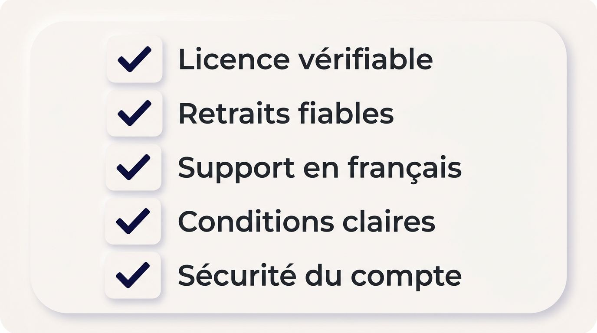
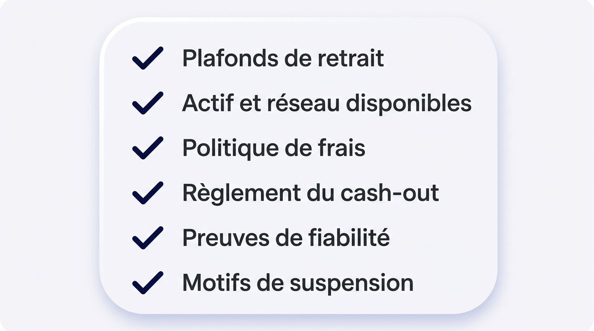
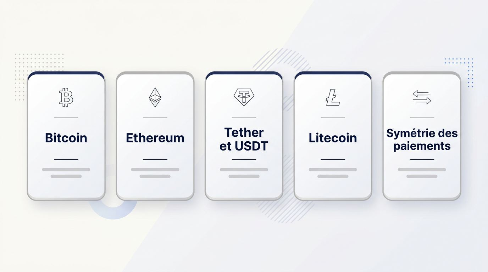
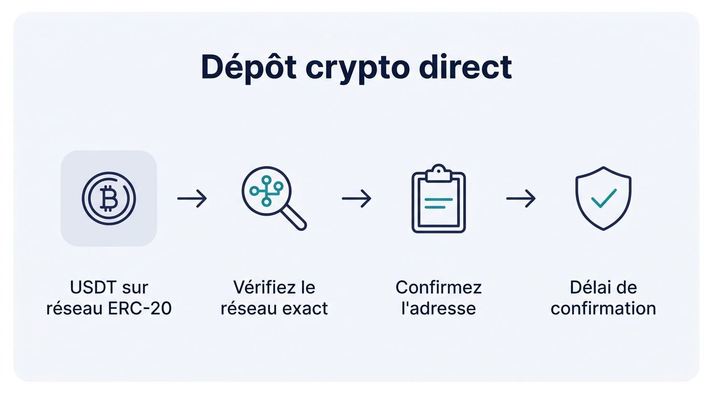

Vous cherchez un bookmaker crypto qui accepte le Bitcoin ou un stablecoin que vous détenez, puis restitue vos gains dans des conditions prévisibles depuis la France. Le bon choix dépend de la compatibilité des paiements, des cotes, des marchés et de règles de retrait lisibles. Des conditions opaques peuvent réduire l’intérêt d’un bonus pourtant attractif.
Ce comparatif de bookmakers crypto aide les lecteurs en France à comparer des plateformes internationales selon leurs conditions pratiques avant d’engager des fonds. Vous pouvez ainsi repérer le meilleur site de paris sportifs crypto adapté à votre usage.
Cette sélection est régulièrement revue et mise à jour.
Plateformes à comparer
Les offres sont chargées automatiquement depuis la source du comparatif.
Comment choisir un bookmaker crypto fiable
Un paiement en crypto n’a d’intérêt que si l’opérateur publie des règles de retrait transparentes, des marchés exploitables, des conditions lisibles et des protections de compte crédibles. Cette méthode évalue les sites retenus à partir de vérifications observables, avec des dépôts, des paris et des retraits.

La publication doit aussi comporter une biographie d’auteur identifiable, accompagnée de références pertinentes dans le secteur des paris. Pour reconnaître un bookmaker crypto fiable, contrôlez les éléments suivants avant votre premier dépôt. Les comparateurs anglophones emploient parfois le terme crypto bookmaker ou l’expression best crypto bookmaker, mais les mêmes preuves de paiement, de licence et de retrait restent nécessaires.
- Vérifiez la licence déclarée, la société exploitante et les modalités de traitement des réclamations.
- Comparez les actifs, réseaux, limites et frais annoncés pour les paiements.
- Évaluez les conditions et le comportement observé des retraits.
- Consultez les cotes, les marchés et les fonctions disponibles pour vos paris habituels.
- Contrôlez les mesures de sécurité, les exigences de vérification et la politique de données.
- Lisez les restrictions pouvant affecter les bonus, les gains, les retraits ou la fermeture du compte.
Licence et gestion des fonds
Avant de confier un dépôt, vérifiez la licence de jeu du bookmaker et les informations qui montrent comment il gère les soldes, les gains et les plaintes des joueurs. Une licence affichée en bas de page ne suffit pas. Consultez le registre ou la procédure officielle du régulateur concerné afin de confirmer le numéro, l’entité titulaire et le périmètre de l’autorisation.
Une licence de jeu de Curaçao et une licence de la Malta Gaming Authority correspondent à des cadres de supervision différents. Les opérateurs internationaux restent soumis aux obligations de lutte contre le blanchiment et le financement du terrorisme de leur juridiction, avec des recours pouvant varier selon le dispositif prévu.
- Confirmez la licence déclarée auprès du registre officiel compétent.
- Recherchez une politique publiée sur la conservation et le traitement des fonds des clients.
- Vérifiez l’existence d’une procédure de plainte et d’un recours indépendant lorsqu’il est proposé.
- Identifiez l’entité qui répond aux demandes relatives aux paiements et aux litiges.
Qualité des paiements en cryptomonnaie
La fiabilité d’un dépôt crypto pour les paris sportifs dépend de la correspondance exacte entre l’actif et le réseau proposés au dépôt comme au retrait. Un réseau blockchain est l’infrastructure qui transmet et confirme une transaction. Le portefeuille crypto pour parier désigne l’outil ou l’adresse utilisé pour envoyer et recevoir cette crypto monnaie.
Une longue liste d’actifs apporte peu d’informations si les frais, les réseaux et les plafonds restent imprécis. L’USDT, par exemple, peut circuler sur plusieurs réseaux et exige de confirmer la prise en charge du réseau TRC-20 avant tout transfert.
- Vérifiez que les actifs acceptés au dépôt sont également disponibles au retrait.
- Contrôlez le réseau affiché pour chaque crypto et l’adresse associée.
- Consultez les frais publiés ainsi que les limites minimales et maximales.
- Confirmez le réseau exact de l’USDT avant d’envoyer les fonds.
Test de fiabilité des retraits
Une promesse de retrait crypto rapide doit être confrontée aux conditions documentées et à un contrôle proportionné des paiements. Le délai interne de validation et le temps de confirmation sur la blockchain constituent deux étapes distinctes. Les contrôles d’identité peuvent aussi modifier le temps réel de traitement des dépôts et retraits.

Un dépôt test suivi d’un retrait limité permet d’observer la friction sans immobiliser un montant important. Distinguez toujours un résultat observé des mentions commerciales de retrait instantané.
- Effectuez un petit retrait initial après avoir placé un pari.
- Réalisez un second retrait après la vérification du compte afin d’évaluer le traitement post-KYC.
- Comparez le délai annoncé avec le résultat constaté lorsqu’une observation testée est disponible.
- Examinez les plafonds, frais et conditions applicables aux montants plus élevés.
Qualité de l’offre de paris
Un site de paris crypto sert vos objectifs seulement si ses cotes, ses marchés en direct, sa profondeur de marché et son cash out correspondent aux paris que vous souhaitez placer. Une vitrine affichant de nombreux sports ne garantit ni des marchés adaptés ni des limites cohérentes avec votre manière de parier.
Les cotes de paris sportifs crypto demandent une comparaison régulière sur les compétitions et les types de paris que vous suivez. Le live betting exige aussi une interface qui permet de valider un pari avant l’évolution des conditions.
- Comparez la régularité des cotes sur les marchés que vous ciblez.
- Vérifiez le volume de marchés disponibles avant match et en direct.
- Contrôlez les limites de mise susceptibles de restreindre votre pari.
- Évaluez la disponibilité pratique du cash out lorsqu’il est proposé.
Sécurité et vérification du compte
Les opérateurs structurés affichent leurs protections de compte, leurs exigences de vérification et leurs règles de confidentialité avant que vos fonds soient exposés.
La sécurité des paris en cryptomonnaie dépend aussi du traitement de vos documents et de vos adresses blockchain. Pour un résident français, les informations pertinentes au regard du RGPD doivent être accessibles, y compris sur la conservation des données. Un support client joignable doit pouvoir orienter les demandes liées à la vérification.
- Vérifiez la présence d’une authentification à deux facteurs.
- Lisez les règles KYC et les informations relatives aux contrôles AML.
- Consultez la politique de confidentialité et les informations sur le stockage des données.
- Recherchez les modalités de traitement des adresses blockchain et des documents d’identité.
Les conditions qui changent la valeur réelle
Une offre séduisante garde de la valeur lorsque ses restrictions restent compatibles avec votre dépôt, vos paris habituels et la récupération de votre solde. Le montant d’un bonus ne renseigne pas sur ses conditions de mise, ses limites de gains ou les contraintes de retrait.
Un code promotionnel crypto peut déclencher des règles supplémentaires. Certaines conditions imposent aussi un volume de mise sur un dépôt, y compris sans bonus accepté. Vous devez donc vérifier la facilité de sortie du compte avant d’y transférer des fonds.
- Consultez les conditions de mise des bonus et les cotes minimales requises.
- Vérifiez les plafonds de retrait, de gains et les seuils de vérification.
- Contrôlez les territoires exclus et les clauses de suspension ou de fermeture de compte.
- Recherchez les règles applicables aux soldes restants et les voies de réclamation.
Dépôts et retraits crypto depuis la France
L’itinéraire le plus adapté dépend de l’actif que vous détenez, du réseau accepté par l’opérateur et de la fréquence prévue de vos paris et retraits. Les frais de dépôt et de retrait crypto, les écarts de conversion entre euros et actifs numériques, ainsi que les frais de la plateforme réduisent tous le solde disponible pour parier.
Les lecteurs français peuvent rencontrer des parcours directs auprès d’opérateurs internationaux ou des parcours indirects, dans lesquels la crypto est convertie avant le paiement.
| Itinéraire de paiement | Moment de la conversion | Points pratiques à vérifier |
|---|---|---|
| Dépôt crypto direct | Aucune conversion préalable chez l’opérateur | Actif, réseau blockchain pour retrait crypto, limites et adresse |
| Carte de débit crypto | Conversion lors du paiement en euros | Frais de conversion, plafonds de carte et compatibilité marchande |
| Portefeuille électronique | Conversion avant le dépôt sur le site de paris | Devise reçue, frais de change et conditions de retrait |
Correspondance des réseaux : Le réseau sélectionné au dépôt et au retrait doit correspondre exactement à celui accepté par l’opérateur. Un actif envoyé sur un réseau différent peut devenir irrécupérable.
Bitcoin, stablecoins ou altcoins
Bitcoin, stablecoins et altcoins exposent votre bankroll à des niveaux différents de variation de prix et de flexibilité de paiement. Les stablecoins sont des actifs numériques conçus pour maintenir une valeur de référence plus stable, ce qui peut faciliter le calibrage des mises, sous réserve des réseaux et conditions pris en charge.

Les paris sportifs en bitcoin conservent une exposition au cours de l’actif. La valeur en euros d’une bankroll peut donc varier alors même que son montant en bitcoin ne change pas. Séparez le budget consacré à chaque pari sportif de vos avoirs détenus comme investissement à long terme.
| Type d’actif | Effet principal sur la bankroll | Point de contrôle |
|---|---|---|
| Bitcoin | Variation possible de la valeur en euros | Tolérance à la volatilité et réseau disponible |
| Stablecoins, dont Tether | Taille des mises plus prévisible | Émetteur, réseau et conditions de l’opérateur |
| Altcoins | Disponibilité et coûts variables | Prise en charge effective avant dépôt |
| Ethereum, Litecoin ou Solana | Conditions propres à chaque réseau | Frais, confirmations et retrait disponible |
Réseaux, frais et vitesse de traitement
Un transfert peut échouer ou coûter davantage lorsque le réseau choisi ne correspond pas exactement à celui indiqué par l’opérateur. Les frais de transaction sont des coûts facturés par le réseau blockchain pour transmettre une opération. Ils réduisent le montant disponible pour parier ou effectuer un retrait crypto.
La question du réseau à choisir pour envoyer des USDT à un bookmaker trouve une réponse dans l’écran de dépôt de la plateforme. Si l’adresse attend de l’USDT sur TRC-20, un envoi du même actif sur un autre réseau peut ne pas être récupérable. Le Lightning Network propose un profil de paiement Bitcoin rapide, tandis que les transactions en chaîne dépendent des confirmations du réseau.
| Réseau ou mode | Profil de coût et de traitement | Usage à rapprocher de votre besoin |
|---|---|---|
| USDT sur TRC-20 | Frais souvent recherchés pour les transferts courants | Dépôts fréquents si l’opérateur accepte ce réseau |
| Bitcoin en chaîne | Confirmation dépendante de l’activité blockchain | Montants et délais compatibles avec votre planning |
| Lightning Network | Paiements Bitcoin conçus pour une transmission rapide | Petits flux lorsque la prise en charge est confirmée |
| Autres réseaux | Frais et disponibilité variables | Actif détenu et conditions de retrait prévues |
Paiements directs et itinéraires indirects
Depuis la France, vous pouvez rencontrer un dépôt direct en cryptomonnaies chez un opérateur international, un paiement par carte crypto ou une conversion via portefeuille électronique. Ces parcours déterminent si le site paris sportif reçoit directement l’actif numérique ou un paiement déjà converti en euros.
La recherche d’un bookmaker sans banque avec crypto renvoie généralement au dépôt direct, tandis que la conversion répond à la question de savoir s’il est possible de convertir ses cryptomonnaies en euros pour parier. Une recherche comme bookmaker crypto monnaie recouvre donc plusieurs itinéraires de paiement qui doivent être comparés séparément. La disponibilité dépend de chaque service et de ses conditions.
- Dépôt direct : la crypto est transférée vers l’adresse fournie par l’opérateur, sans conversion préalable.
- Carte de débit crypto : l’émetteur convertit les actifs en euros au moment où vous payez.
- Portefeuille électronique : Skrill ou Neteller peuvent servir de moyen de conversion avant le dépôt, selon leurs fonctions disponibles.
- Autres services de paiement : des solutions comme Lyzi peuvent convertir ou acheminer un paiement selon leur propre dispositif.
Vérifications avant un dépôt ou un retrait
Quelques contrôles effectués avant l’envoi évitent des transferts irréversibles, des retraits retardés et des examens de compte évitables.

Ces vérifications répondent concrètement à la question de savoir comment déposer des cryptomonnaies sur un bookmaker et comment retirer ses gains en crypto sur un site de paris, sans transformer l’opération en tutoriel technique.
- Vérifiez l’adresse de dépôt affichée sur votre compte avant de copier ou valider l’envoi.
- Confirmez que le réseau choisi correspond exactement au réseau indiqué.
- Consultez le seuil minimal de retrait et les éventuels plafonds applicables.
- Vérifiez les exigences de propriété du portefeuille destinataire avant le retrait.
- Conservez les identifiants de transaction jusqu’à la réception des fonds.
Coûts selon la fréquence des paris
Les frais réseau, les écarts de conversion et les frais de retrait en cryptomonnaie peuvent réduire l’efficacité d’une bankroll lorsque les fonds circulent souvent. Cette pression augmente avec les paris en direct, qui peuvent encourager des mouvements répétés entre portefeuille, solde de paris et compte en euros.
Les paris avant match occasionnels impliquent souvent moins de transferts. Vous pouvez alors mieux regrouper vos opérations et mesurer leur coût global avant de choisir une route de paiement.
- Frais réseau : ils diminuent le montant effectivement crédité ou retiré sur la blockchain.
- Écart de conversion : le prix d’achat ou de vente entre euros et crypto s’ajoute aux frais visibles.
- Frais de la plateforme : l’opérateur peut appliquer des conditions distinctes selon l’actif ou le montant.
- Fréquence : plusieurs petits mouvements peuvent coûter plus cher qu’une gestion plus espacée du solde.
Couverture sportive, cotes et paris en direct
L’étendue des marchés constitue souvent une raison concrète de comparer un opérateur international avec une solution locale par défaut, à condition d’examiner aussi les cotes et la qualité du direct. Un site de pari crypto peut convenir aux paris sportifs crypto si ses sports, ses limites et ses marchés correspondent à vos habitudes réelles.
Pour les lecteurs en France, les périodes d’intérêt se concentrent notamment autour de la Ligue 1, de la Ligue des champions, de Roland-Garros, du Tour de France et des grandes compétitions internationales de football. Lors d’un grand tournoi, une recherche comme bookmaker crypto coupe du monde doit être évaluée avec les mêmes critères de cotes, de limites, de paiement et de retrait. Vérifiez la profondeur avant match, l’offre en direct et le niveau des prix sur les événements que vous suivez.
Profondeur des marchés avant match
Une couverture avant match utile propose plusieurs marchés dans les sports et compétitions que vous suivez, avec des options adaptées à votre type de pari. Le football, le tennis, le cyclisme et les esports constituent des catégories pertinentes pour évaluer la diversité d’un site de paris.
Pour évaluer les sports disponibles pour parier avec des cryptomonnaies, examinez les disciplines, les compétitions, les marchés et les limites proposés. Les paris esports crypto méritent aussi un contrôle spécifique des compétitions, des marchés et des limites proposés.
- Examinez la diversité des marchés de football et la profondeur des compétitions couvertes.
- Contrôlez les options de tennis, dont les marchés liés aux tournois et aux matchs.
- Vérifiez les paris à terme sur le cyclisme et les grands événements internationaux.
- Consultez l’offre esports lorsque cette catégorie fait partie de vos habitudes de jeu.
Expérience des paris en direct
Une expérience de paris en direct utilisable dépend du volume de marchés ouverts, de cotes actualisées avec cohérence, de limites lisibles et de règles de règlement transparentes. Les paris en direct crypto peuvent être disponibles, mais une plateforme doit aussi vous laisser valider le pari avant que les conditions ne changent.
Le live betting impose une attention particulière à la réactivité de l’interface. Une cote ou une limite peut évoluer entre la sélection et la confirmation du pari, ce qui rend la transparence des messages affichés nécessaire.
- Contrôlez le nombre de marchés actifs pendant l’événement.
- Observez la cohérence du rafraîchissement des cotes et des suspensions de marché.
- Vérifiez les limites de mise applicables aux paris en cours.
- Lisez les règles de règlement propres aux événements en direct.
Cash out et gestion des paris
Le cash out constitue une option facultative pour gérer un pari ouvert, dont le prix et la disponibilité peuvent évoluer avant le règlement. Il ne garantit ni un gain ni une amélioration de la valeur de votre pari. Les conditions de marché, la suspension d’un événement ou le changement des cotes peuvent faire disparaître cette fonction.
Les fonctions de cash out des paris sportifs demandent donc une lecture du montant proposé au moment précis où vous envisagez de l’accepter.
- Cash out total : il clôture l’intégralité du pari pour le montant affiché.
- Cash out partiel : il permet de fermer une partie de l’exposition tout en laissant le reste du pari actif.
- Prix proposé : il doit apparaître clairement avant confirmation et peut changer.
- Disponibilité : elle peut être suspendue ou retirée avant le règlement définitif.
Comparer les cotes sans suivre les promesses
Comparez les cotes à plusieurs reprises sur des marchés strictement équivalents, en écartant les prix isolés mis en avant dans une publicité. Une cote attractive sur un seul événement ne prouve pas la qualité durable d’un bookmaker sur l’ensemble des marchés que vous souhaitez jouer.
Les cotes de paris sportifs crypto gardent leur intérêt pratique seulement si la mise que vous voulez engager est acceptée. Une limite basse peut réduire l’utilité d’un prix pourtant compétitif.
- Comparez le même événement, le même marché et les mêmes conditions de règlement.
- Examinez la marge du bookmaker sur plusieurs sélections comparables.
- Vérifiez les limites de mise avant de décider où parier.
- Répétez cette comparaison sur différents événements et moments de la saison.
Bonus crypto et valeur réelle des promotions
Après avoir comparé les cotes hors promotion, examinez si un bonus ajoute une valeur utilisable à vos habitudes de paris. Un bonus de bookmaker crypto vaut par ses exigences de mise, ses cotes minimales, sa durée, son éligibilité et ses plafonds de retrait, bien davantage que par le montant affiché.

Les bonus de bienvenue peuvent concerner les paris sportifs ou d’autres jeux proposés par la plateforme. Lisez d’abord le mécanisme de l’offre, puis les contraintes de mise, les règles de retrait et les signaux de manque de transparence.
| Structure d’offre | Action demandée | Point à contrôler |
|---|---|---|
| Bonus de dépôt | Effectuer un dépôt et parfois activer l’offre | Pourcentage crédité, mise requise et délai |
| Pari gratuit | Réaliser un pari qualifiant | Cote minimale et traitement du gain |
| Bonus de rechargement | Déposer à nouveau après l’inscription | Fréquence, éligibilité et restrictions |
| Promotion crypto | Utiliser un actif ou un réseau déterminé | Actif accepté, plafonds et conditions de retrait |
Types d’offres de bienvenue
Les offres de bienvenue se distinguent surtout par l’action nécessaire pour déclencher leur valeur et par les restrictions attachées à la récompense. Pour savoir quels bonus proposent les bookmakers crypto, commencez par identifier ce que vous devez réellement faire avant de recevoir le crédit.
Un bonus de dépôt, un pari gratuit et une offre de rechargement n’imposent pas le même parcours. Le montant maximal ne permet donc pas, à lui seul, de comparer leur intérêt.
| Type d’offre | Déclenchement habituel | Restriction fréquente |
|---|---|---|
| Bonus de dépôt | Dépôt suivi d’un opt-in éventuel | Volume de mise sur le bonus et le dépôt |
| Pari gratuit | Pari initial qualifiant | Seul le gain net peut être versé |
| Rechargement | Dépôt répété sur une période définie | Offre réservée à certains joueurs |
| Offre liée à la crypto | Paiement ou actif précis | Réseau, actif ou plafond spécifiques |
Conditions de mise et cotes minimales
Le multiplicateur de mise et la cote minimale qualifiante déterminent si un bonus peut devenir une valeur de pari réellement utilisable. Les conditions de mise des bonus doivent être lues dans l’ordre où elles influencent vos paris habituels.
- Vérifiez le volume total à miser avant tout retrait de fonds bonus ou de gains associés.
- Contrôlez la cote minimale exigée pour chaque pari pris en compte.
- Confirmez que vos sports, marchés et types de paris habituels contribuent bien au volume demandé.
- Consultez la date d’expiration, car un délai court peut empêcher d’utiliser l’offre selon votre rythme de jeu.
Retraits et plafonds de gains
Les plafonds de retrait et de gains peuvent réduire fortement la valeur d’une promotion, même lorsque le montant annoncé paraît généreux. Avant d’accepter une offre, vérifiez les règles qui encadrent le retrait crypto chez le bookmaker et les gains issus du bonus.
- Consultez le montant maximal que vous pouvez retirer après utilisation du bonus.
- Recherchez le plafond de gain applicable aux paris financés par la promotion.
- Vérifiez si le site bloque le retrait des fonds bonus avant la fin des exigences de mise.
- Lisez les clauses susceptibles d’annuler un pari, un gain ou l’offre entière en cas de non-respect des règles.
Repérer les pratiques promotionnelles trompeuses
Des opt-ins flous, des conditions de mise peu visibles et des montants maximums exagérés justifient une lecture attentive des règles. Un code promo de bookmaker crypto doit renvoyer à des conditions accessibles sur le site, y compris pour le retrait.
- Fenêtres promotionnelles envahissantes : elles peuvent mettre en avant un montant maximal tout en réduisant la visibilité des règles.
- Opt-in imprécis : vérifiez si une activation explicite est requise avant le dépôt ou le pari.
- Rollover dissimulé : recherchez le volume de mise dans les conditions détaillées du bonus.
- Valeur maximale trompeuse : contrôlez le plafond réel, les cotes exigées et les gains retirables.
Sécurité du compte, KYC et protection des données
La sécurité du compte, la clarté des vérifications et un traitement transparent des données protègent vos fonds et limitent les interruptions évitables lors d’un retrait. La sécurité des paris en cryptomonnaie repose sur les réglages du compte, les pratiques de la plateforme et les informations que vous acceptez de transmettre.
L’anonymat des paris crypto ne doit pas être présumé. Les transactions sur blockchain peuvent être traçables, tandis que les opérateurs peuvent demander des documents d’identité selon leurs procédures.
Protéger son compte de paris
Activez les protections proposées avant le premier dépôt afin de réduire le risque d’accès non autorisé ou de modification frauduleuse d’une adresse de retrait. L’authentification à deux facteurs ajoute une seconde preuve de connexion après le mot de passe.
- Vérifiez que l’authentification à deux facteurs est disponible et activez-la sur votre compte.
- Utilisez un mot de passe unique pour ce site de paris et ne le réemployez pas sur un autre service.
- Contrôlez l’existence d’alertes de connexion, notamment lors d’un accès depuis un nouvel appareil.
- Recherchez les contrôles appliqués aux adresses de retrait afin de détecter ou limiter une modification non autorisée.
- Consultez les paramètres de vérification de compte du bookmaker avant de créditer le solde.
Ce que signifient les contrôles KYC et AML
Les contrôles KYC et AML peuvent intervenir à l’inscription, après un dépôt, avant un retrait ou lors d’une activité nécessitant un examen. Le KYC correspond à la vérification d’identité, tandis que l’AML regroupe les contrôles de lutte contre le blanchiment.
La question de savoir s’il faut faire un KYC pour parier avec des cryptomonnaies dépend des règles de l’opérateur et de l’activité observée. Parier en crypto sans vérification d’identité ne doit donc pas être considéré comme une condition durable de continuité du compte. L’expression crypto bookmaker no KYC ne garantit pas qu’aucun contrôle ne sera demandé avant un retrait ou lors d’un examen de conformité.
- Le site peut demander une pièce d’identité et un justificatif d’âge dès l’ouverture du compte.
- Un dépôt, un retrait ou un changement d’adresse blockchain peut déclencher une vérification complémentaire.
- L’opérateur peut demander un justificatif d’origine des fonds dans le cadre de ses contrôles AML.
- Une vérification au moment du retrait peut prolonger le traitement jusqu’à validation des documents.
- Les mineurs sont exclus des jeux d’argent et des offres JONUM, ce qui impose des contrôles d’âge effectifs.
Confidentialité et traitement des données
Examinez la politique de confidentialité et les modalités de stockage avant d’envoyer une pièce d’identité, des données de paiement ou une adresse blockchain. Les résidents français doivent pouvoir apprécier si le traitement annoncé répond aux attentes du RGPD avant l’ouverture du compte.
- Lisez une politique de confidentialité claire, accessible depuis le site avant l’inscription.
- Vérifiez les informations disponibles sur le lieu de stockage et les prestataires qui traitent les données.
- Consultez la durée de conservation prévue pour les documents KYC et les données du compte.
- Évaluez le traitement annoncé pour les adresses blockchain, dont les flux peuvent rester traçables.
- Recherchez les modalités d’exercice de vos droits relatifs aux données personnelles.
Fermer un compte et récupérer son solde
Les conditions de fermeture doivent être connues avant le premier dépôt, car le retrait final, les paris non réglés et la conservation des données peuvent affecter votre départ. Un opérateur peut exiger un KYC complémentaire avant de finaliser le paiement du solde.
- Consultez la procédure prévue pour fermer un compte auprès de l’opérateur avant de vous inscrire.
- Vérifiez les conditions du retrait final, y compris les limites, frais et vérifications éventuelles.
- Identifiez le traitement des paris ouverts et le délai applicable à leur règlement.
- Lisez la politique de conservation des données après fermeture et conservez les justificatifs utiles.
Outils pour des paris crypto responsables
Des paris crypto responsables exigent des limites visibles sur le site et une bankroll qui tient compte à la fois des pertes de paris, des frais et des variations de valeur des actifs. Les réglages de compte, la séparation des fonds et les ressources d’aide en français répondent à des besoins distincts.
Les cadres applicables aux JONUM prévoient notamment des limites de dépense, de perte et de durée, ainsi que des mécanismes d’auto-exclusion. Vérifiez aussi la disponibilité de contrôles comparables sur les plateformes internationales.
Contrôles disponibles sur le site
Recherchez les limites de dépôt, de perte, de session et d’auto-exclusion dans les réglages du compte avant de transférer des fonds. La disponibilité et l’étendue de ces outils de jeu responsable chez un bookmaker varient selon les opérateurs internationaux.
- Limite de dépôt : elle fixe le montant que vous pouvez créditer sur une période donnée.
- Limite de perte : elle encadre les pertes acceptées sur le compte.
- Limite de session : elle restreint le temps consacré au jeu sur le site.
- Auto-exclusion : elle bloque l’accès au compte pendant la durée choisie.
Gérer une bankroll de paris en cryptomonnaie
Séparer les fonds de paris de vos avoirs crypto de long terme rend votre budget plus lisible malgré les fluctuations de prix et les coûts de transaction. Une bankroll de paris crypto doit rester proportionnée à la somme prévue pour parier, sans confondre fonds de jeu et investissement.
- Gardez un solde dédié aux paris, distinct de vos avoirs conservés en Bitcoin ou dans d’autres actifs.
- Dimensionnez le solde du site selon votre budget de pari prévu et non selon la valeur totale de votre portefeuille.
- Utilisez une unité de mise cohérente avec votre budget, en tenant compte de la valeur en euros du solde.
- Intégrez les frais réseau et les écarts de conversion au montant réellement disponible pour vos paris.
- Préférez une valeur de référence stable pour vos mises si la variation du Bitcoin complique le suivi du budget.
Solutions d’aide en français
Si vos paris ne vous paraissent plus maîtrisés, utilisez sans délai une pause de compte et les ressources d’aide disponibles en français. Le support client peut activer certains outils de restriction lorsque les réglages ne sont pas accessibles directement.
- Activez une pause immédiate ou une auto-exclusion depuis les paramètres du compte.
- Contactez un service d’aide au jeu responsable en France pour obtenir un échange confidentiel en français.
- Consultez les ressources de l’ANJ relatives à l’auto-exclusion nationale et à l’accompagnement.
- Demandez au support client les modalités de blocage ou de limitation disponibles sur la plateforme.
Paris crypto en France et conditions d’accès
Depuis la France, vous pouvez rencontrer trois voies distinctes, le dépôt direct auprès d’un opérateur international, un itinéraire indirect avec conversion en euros, ou un service régulé localement sans dépôt direct en cryptomonnaies. La disponibilité d’un moyen de paiement ne détermine pas à elle seule la légalité des paris crypto ni le statut de l’offre de jeux.
Les opérateurs ANJ proposent des services de paris sportifs en euros. Les services internationaux peuvent afficher des dépôts directs, mais leur accès, leurs paiements et les recours disponibles dépendent de leurs propres conditions et du contexte français.
Règle de paiement en France. Les opérateurs de paris sportifs en ligne agréés par l’ANJ n’acceptent pas de dépôts directs en cryptomonnaies.
- Accès de paiement : un dépôt direct international transfère la crypto vers l’opérateur, tandis qu’une carte crypto ou un portefeuille électronique convertit généralement les fonds avant le pari.
- Statut des offres : un opérateur français agréé en ligne ne propose pas de dépôt direct en crypto. Les opérateurs ANJ et les plateformes internationales relèvent de cadres distincts.
- Blocage : l’ANJ peut demander le blocage d’offres de jeux non agréées accessibles depuis la France, y compris certaines plateformes de prédiction utilisant la crypto. Cette action peut affecter l’accès et la continuité des paiements.
- JONUM : la loi no 2024-449 sur la sécurisation et la régulation de l’espace numérique, dite SREN, prévoit un cadre expérimental de trois ans pour les jeux à objets numériques monétisables, avec notification des opérateurs, documentation technique et mesures de protection sous supervision de l’ANJ.
- Marchés prédictifs : leur traitement peut différer de celui des paris sportifs conventionnels lorsqu’ils visent des résidents français. Les JONUM, les marchés prédictifs et les paris sportifs ne sont pas interchangeables.
- Fiscalité : recherchez un conseil professionnel actualisé concernant vos obligations individuelles de déclaration et de fiscalité liées à une activité internationale de paris en crypto.
Avantages et risques d’un bookmaker crypto
Un opérateur international bien choisi peut proposer un règlement crypto direct, un accès à des marchés plus larges et des options de paiement flexibles, à condition que les retraits, vérifications et recours soient clairement documentés. Les avantages des paris sportifs crypto dépendent de la mise en œuvre de chaque plateforme et des conditions que vous pouvez contrôler avant le dépôt.
Les risques des paris en cryptomonnaie concernent autant le traitement du compte et des gains que la valeur fluctuante de certains actifs. Les éléments suivants permettent de séparer les fonctions utiles des conditions insuffisamment transparentes.
Les atouts possibles des sites de paris crypto
Les sites de paris crypto peuvent apporter une valeur pratique par le règlement direct, des marchés internationaux plus variés et le choix entre Bitcoin et stablecoins, si leurs règles restent adaptées à votre usage. Un bookmaker acceptant les cryptomonnaies doit publier les actifs, réseaux et conditions associés.
- Le règlement crypto direct peut réduire les étapes de conversion lorsque l’actif et le réseau sont pris en charge.
- Des marchés internationaux plus larges peuvent mieux correspondre aux compétitions et types de paris que vous suivez.
- Un retrait crypto rapide reste possible lorsque l’opérateur traite la demande sans délai interne excessif et que le réseau confirme la transaction.
- Le choix entre Bitcoin et stablecoins permet d’adapter le solde à votre préférence de volatilité et de paiement.
Les risques qui doivent guider le choix
Une bankroll volatile, des conditions de retrait imprécises, des vérifications mal expliquées et l’absence de recours doivent écarter un opérateur faible avant tout dépôt. Un bookmaker Bitcoin fiable publie les règles applicables aux paiements, au KYC et au traitement des réclamations.
- Vérifiez les conditions de retrait, les limites et les frais avant de transférer des fonds.
- Contrôlez la politique KYC afin de comprendre les documents susceptibles d’être demandés.
- Consultez les modalités de plainte et une voie de résolution indépendante lorsqu’elle est proposée.
- Tenez compte des coûts de paiement et du contexte d’accès depuis la France déjà exposés dans ce comparatif.
Signaux d’alerte avant un dépôt
Une licence invérifiable, l’absence de conditions légales, des contrôles de joueurs manquants, des promotions agressives et des retraits flous constituent des signaux d’alerte avant un dépôt. Un logo de licence sans numéro vérifiable ou sans lien fonctionnel vers une source officielle ne confirme pas le statut déclaré par le site.
- La licence doit pouvoir être vérifiée auprès de l’autorité ou du registre indiqué.
- Les conditions générales et la politique de confidentialité doivent être accessibles avant l’inscription.
- Les informations utiles au regard du RGPD doivent préciser le traitement des données et des documents.
- Les réglages de sécurité et de jeu responsable doivent apparaître clairement sur le compte ou le site.
- La procédure de retrait doit indiquer les délais, limites et contrôles applicables.
Les points à retenir avant de choisir
Choisissez un opérateur international adapté à votre itinéraire crypto, à vos paris et au niveau de protection que vous acceptez après consultation de ce comparatif de bookmakers crypto.
- Vérifiez la compatibilité entre l’actif détenu, le réseau choisi et les conditions de paiement.
- Testez la fiabilité du retrait avec un montant limité et conservez les informations de transaction.
- Comparez les cotes, les marchés et les limites sur les paris que vous placez réellement.
- Contrôlez les protections du compte, les règles KYC, les données et les outils de jeu responsable.
- Tenez compte des conditions d’accès depuis la France avant d’engager votre solde.
Choisissez un site de paris crypto adapté à vos besoins
Comparez chaque site de paris selon son itinéraire de paiement, ses conditions de retrait, ses marchés et ses cotes. Choisissez une plateforme dont les protections de compte et les conditions d’accès correspondent à votre manière de parier depuis la France.
Questions fréquentes sur les bookmakers crypto en France
Les réponses suivantes traitent de questions pratiques qui peuvent encore influencer votre choix après comparaison des paiements, des conditions, des protections et de l’accès. Elles concernent les opérations courantes liées à un bookmaker crypto en France.
Les paris sportifs sont-ils réglés directement sur la blockchain ?
Les dépôts et retraits peuvent utiliser la blockchain, mais les paris sportifs sont généralement suivis et réglés dans le système interne de l’opérateur.
Pourquoi un retrait crypto peut-il rester en attente après la vérification KYC ?
Un retrait crypto peut rester en attente après le KYC en raison de contrôles internes, de limites de retrait, d’un examen AML ou du traitement propre à l’opérateur.
Le cash out peut-il disparaître avant le règlement d’un pari en direct ?
Oui. Le cash out peut être suspendu ou disparaître lorsque les cotes évoluent, qu’un événement important survient ou que les règles du marché l’imposent.
Que faut-il conserver avant de fermer un compte de bookmaker crypto ?
Conservez les confirmations de dépôt et retrait, l’historique des paris, le relevé du solde final et les échanges importants avec le support. Ces éléments peuvent servir au suivi de vos gains, à une réclamation ou à vos obligations individuelles.
Que se passe-t-il si des cryptomonnaies sont envoyées sur le mauvais réseau ?
Les fonds peuvent être perdus ou rester inaccessibles si le réseau blockchain ne correspond pas. Contactez immédiatement le destinataire, sans présumer qu’une récupération sera techniquement possible.